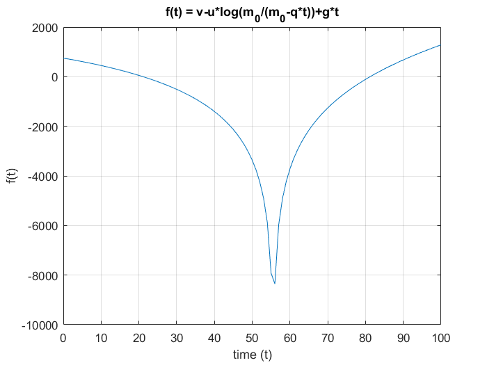
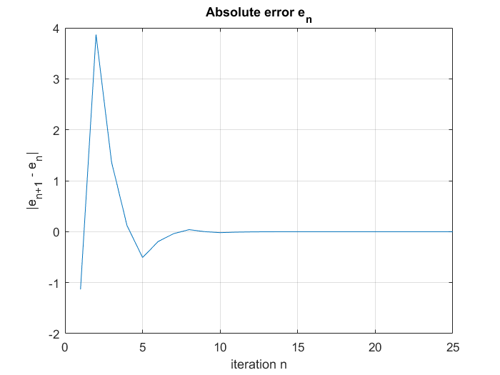

Contents
Bisection Method for finding zeros of a function
clear all;
close all;
Function definition
u = 2000; v = 750; m_0 = 150000;
g = 9.81; q = 2700;
f = @(t) v-u*log(m_0/(m_0-q*t))+g*t;
a=10; b=30;
Plotting function f(t)
X = 0:100;
Y = 0:100;
n = 1;
for x = 0:100
Y(n) = f(x);
n = n + 1;
end
plot(X,Y); grid on;
xlabel("time (t)");
ylabel("f(t)");
title("f(t) = v-u*log(m_0/(m_0-q*t))+g*t");
Warning: Imaginary parts of complex X and/or
Y arguments ignored

Stopping criterium
TOL = 10^(-6);
Nmax = floor ( log((b-a)/TOL) / log(2) ) + 1
pvalues=zeros(Nmax,1);
Nmax =
25
Main loop
for i = 1 : Nmax
p = (a+b)/2;
pvalues(i)=p;
sfa = f(a);
sfp = sign(f(p));
fprintf( '\t\t %3d \t (%.6f,%.6f) \t %.10f \n', i, a, b, p)
if ( (b-a)<2*TOL || sfp == 0 )
break
elseif ( sfa * sfp < 0 )
b = p;
else
a = p;
sfa = sfp;
end
end
1 (10.000000,30.000000) 20.0000000000
2 (20.000000,30.000000) 25.0000000000
3 (20.000000,25.000000) 22.5000000000
4 (20.000000,22.500000) 21.2500000000
5 (20.000000,21.250000) 20.6250000000
6 (20.625000,21.250000) 20.9375000000
7 (20.937500,21.250000) 21.0937500000
8 (21.093750,21.250000) 21.1718750000
9 (21.093750,21.171875) 21.1328125000
10 (21.093750,21.132813) 21.1132812500
11 (21.113281,21.132813) 21.1230468750
12 (21.123047,21.132813) 21.1279296875
13 (21.127930,21.132813) 21.1303710938
14 (21.130371,21.132813) 21.1315917969
15 (21.131592,21.132813) 21.1322021484
16 (21.132202,21.132813) 21.1325073242
17 (21.132202,21.132507) 21.1323547363
18 (21.132355,21.132507) 21.1324310303
19 (21.132355,21.132431) 21.1323928833
20 (21.132393,21.132431) 21.1324119568
21 (21.132412,21.132431) 21.1324214935
22 (21.132412,21.132421) 21.1324167252
23 (21.132412,21.132417) 21.1324143410
24 (21.132414,21.132417) 21.1324155331
25 (21.132414,21.132416) 21.1324149370
Absolute Error computation
plast =p;
errors=pvalues-plast*ones(Nmax,1);
fprintf('Approximate value | Absolute Error\n\n')
fprintf(' %.10f | %.10f\n',[pvalues errors]');
figure; plot(errors); grid on;
xlabel("iteration n");
ylabel("|e_{n+1} - e_n|");
title('Absolute error e_n')
Approximate value | Absolute Error
20.0000000000 | -1.1324149370
25.0000000000 | 3.8675850630
22.5000000000 | 1.3675850630
21.2500000000 | 0.1175850630
20.6250000000 | -0.5074149370
20.9375000000 | -0.1949149370
21.0937500000 | -0.0386649370
21.1718750000 | 0.0394600630
21.1328125000 | 0.0003975630
21.1132812500 | -0.0191336870
21.1230468750 | -0.0093680620
21.1279296875 | -0.0044852495
21.1303710938 | -0.0020438433
21.1315917969 | -0.0008231401
21.1322021484 | -0.0002127886
21.1325073242 | 0.0000923872
21.1323547363 | -0.0000602007
21.1324310303 | 0.0000160933
21.1323928833 | -0.0000220537
21.1324119568 | -0.0000029802
21.1324214935 | 0.0000065565
21.1324167252 | 0.0000017881
21.1324143410 | -0.0000005960
21.1324155331 | 0.0000005960
21.1324149370 | 0.0000000000
